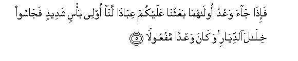

Sacred Texts Islam Index
Hypertext Qur'an Unicode Palmer Pickthall Yusuf Ali English Rodwell
Sūra XVII.: Banī Isrā-īl, or the Children of Israel, Index
Previous Next

The Holy Quran, tr. by Yusuf Ali, [1934], at sacred-texts.com
Sūra XVII.: Banī Isrā-īl, or the Children of Israel,
Section 1
1. Subhana allathee asra biAAabdihi laylan mina almasjidi alharami ila almasjidi al-aqsa allathee barakna hawlahu linuriyahu min ayatina innahu huwa alssameeAAu albaseeru
1. Glory to (God)
Who did take His Servant
For a Journey by night
From the Sacred Mosque
To the Farthest Mosque,
Whose precincts We did
Bless,—in order that We
Might show him some
Of Our Signs: for He
Is the One Who heareth
And seeth (all things).
2. Waatayna moosa alkitaba wajaAAalnahu hudan libanee isra-eela alla tattakhithoo min doonee wakeelan
2. We gave Moses the Book,
And made it a Guide
To the Children of Israel,
(Commanding): "Take not
Other than Me
As Disposer of (your) affairs."
3. Thurriyyata man hamalna maAAa noohin innahu kana AAabdan shakooran
3. O ye that are sprung
From those whom We carried
(In the Ark) with Noah!
Verily he was a devotee
Most grateful.
4. Waqadayna ila banee isra-eela fee alkitabi latufsidunna fee al-ardi marratayni walataAAlunna AAuluwwan kabeeran
4. And We gave (clear) warning
To the Children of Israel
In the Book, that twice
Would they do mischief
On the earth and be elated
With mighty arrogance
(And twice would they be punished)!

5. Fa-itha jaa waAAdu oolahuma baAAathna AAalaykum AAibadan lana olee ba/sin shadeedin fajasoo khilala alddiyari wakana waAAdan mafAAoolan
5. When the first of the warnings
Came to pass, We sent
Against you Our servants
Given to terrible warfare:
They entered the very inmost
Parts of your homes;
And it was a warning
(Completely) fulfilled.
6. Thumma radadna lakumu alkarrata AAalayhim waamdadnakum bi-amwalin wabaneena wajaAAalnakum akthara nafeeran
6. Then did We grant you
The Return as against them:
We gave you increase
In resources and sons,
And made you
The more numerous
In man-power.
7. In ahsantum ahsantum li-anfusikum wa-in asa/tum falaha fa-itha jaa waAAdu al-akhirati liyasoo-oo wujoohakum waliyadkhuloo almasjida kama dakhaloohu awwala marratin waliyutabbiroo ma AAalaw tatbeeran
7. If ye did well,
Ye did well for yourselves;
If ye did evil,
(Ye did it) against yourselves?
So when the second
Of the warnings came to pass,
(We permitted your enemies)
To disfigure your faces,
And to enter your Temple
As they had entered it before,
And to visit with destruction
All that fell into their power.
8. AAasa rabbukum an yarhamakum wa-in AAudtum AAudna wajaAAalna jahannama lilkafireena haseeran
8. It may be that your Lord
May (yet) show Mercy
Unto you; but if ye
Revert (to your sins),
We shall revert
(To Our punishments):
And We have made Hell
A prison for those who
Reject (all Faith),
9. Inna hatha alqur-ana yahdee lillatee hiya aqwamu wayubashshiru almu/mineena allatheena yaAAmaloona alssalihati anna lahum ajran kabeeran
9. Verily this Qur-ān
Doth guide to that
Which is most right (or stable),
And giveth the glad tidings
To the Believers who work
Deeds of righteousness,
That they shall have
A magnificent reward;
10. Waanna allatheena la yu/minoona bial-akhirati aAAtadna lahum AAathaban aleeman
10. And to those who believe not
In the Hereafter, (it announceth)
That We have prepared
For them a Penalty
Grievous (indeed).